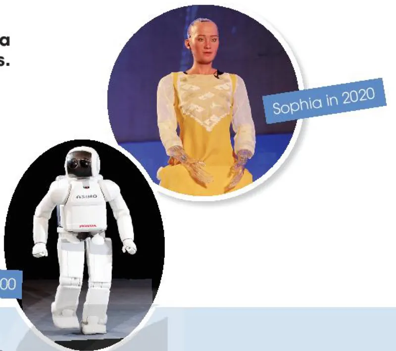
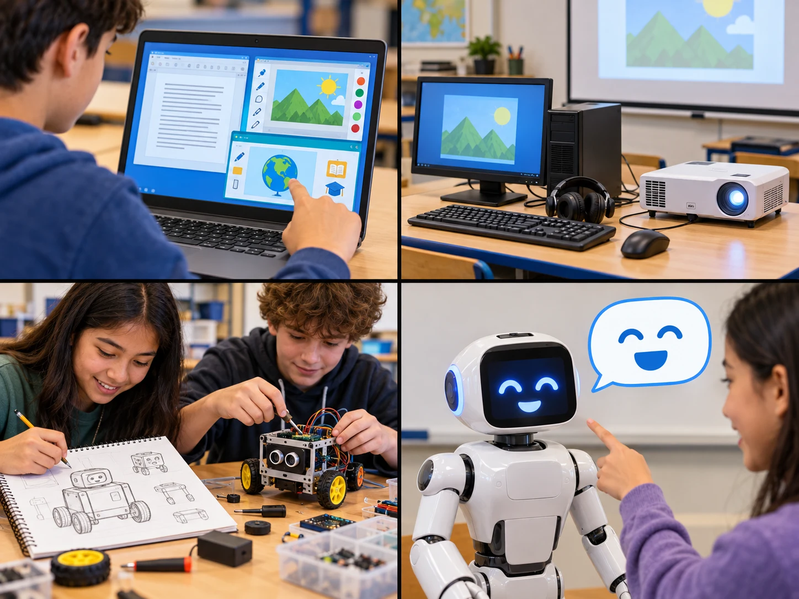
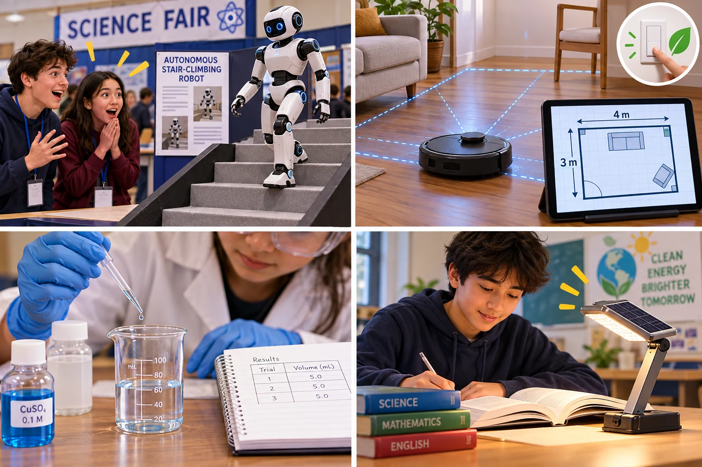
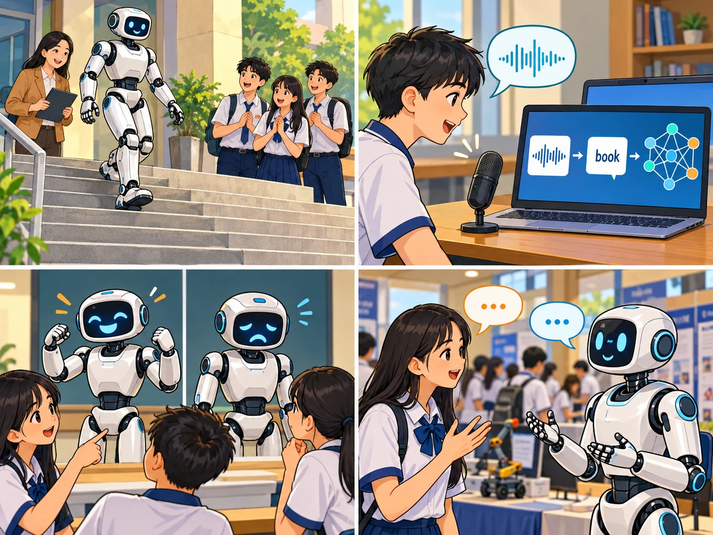
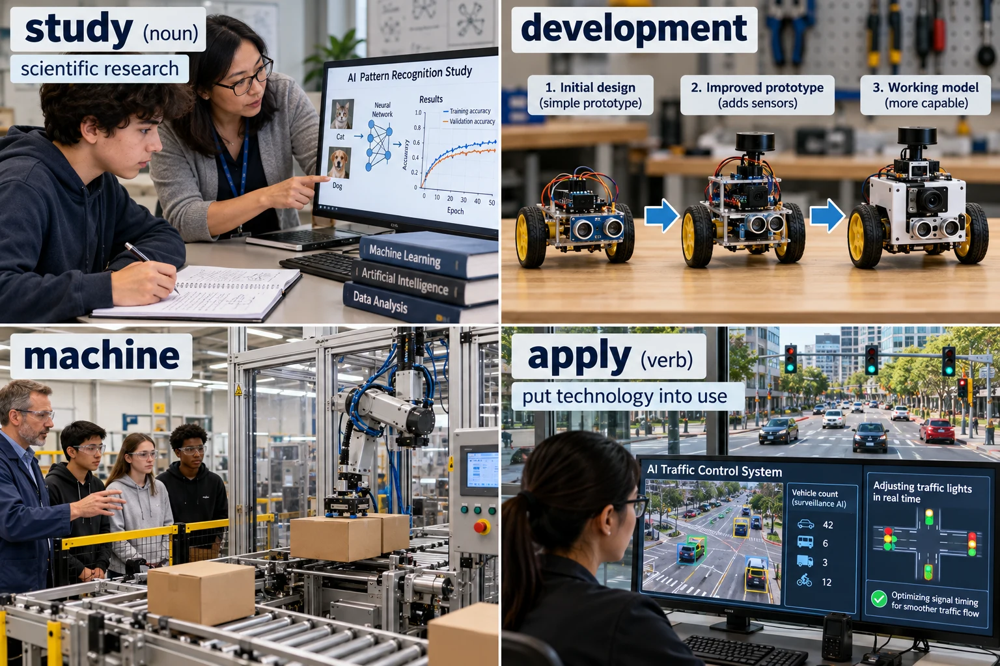
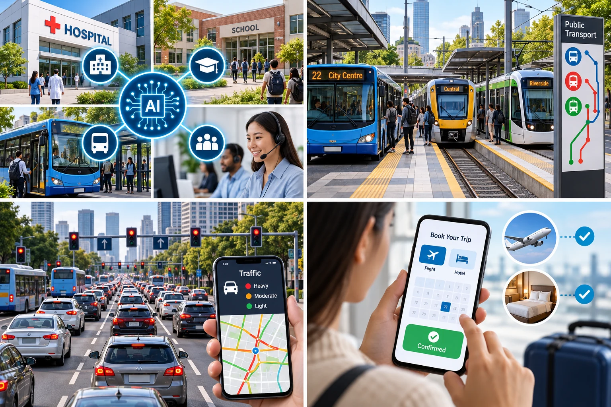
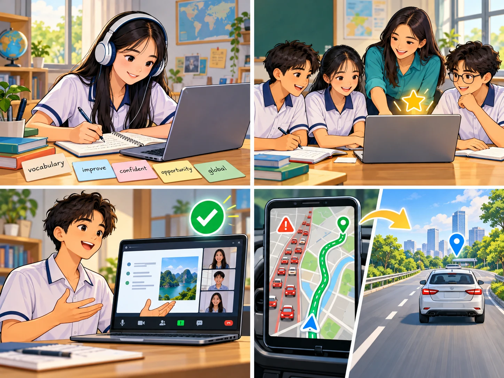
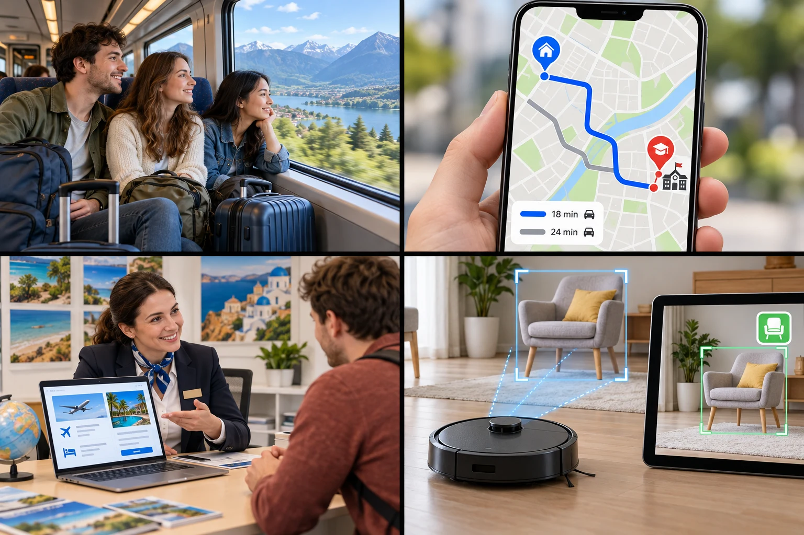
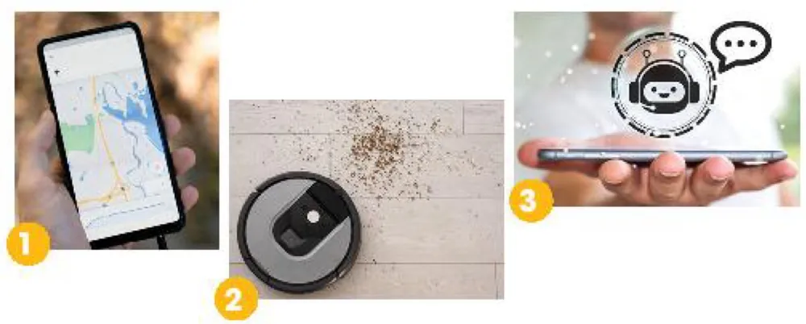

Artificial intelligence
Lesson 3 — Reading
5Five stops in 45 minutes
- 🤖
Before
Asimo & Sophia + 19 words
9 min - 📖
While
Tasks 2, 3, 4
16 min - 🔍
Game
AI Museum Mystery
8 min - 🏫
After
AI in schools
9 min - 🏠
Wrap-up
Homework
3 min
By the end of this lesson…
- 🎯
Main idea
Choose the best title for a text about AI.
- 🔎
Details
Match pictures with uses of AI; decide true or false.
- 🏫
Discuss
Talk about how AI can be used in schools.
Before you read
Task 1 + new words
9 minutesAsimo (2000) and Sophia (2020)

1. What are they? They are robots.
2. What do you think they can do? walk, talk, show emotions, do household chores …

create
(v) /kriˈeɪt/ tạo ra, sáng tạo Engineers create robots to help people.
amaze
(v) /əˈmeɪz/ làm kinh ngạc Robots can amaze us with their abilities.express
(v) /ɪkˈspres/ thể hiện, bộc lộ Some robots can express emotions through their faces.
emotion
(n) /ɪˈməʊʃn/ cảm xúc Happiness is an emotion that robots can imitate.artificial intelligence
(n) /ˌɑːtɪfɪʃl ɪnˈtelɪdʒəns/ trí tuệ nhân tạo (AI) Apps use artificial intelligence to recognise speech.
study
(n) /ˈstʌdi/ sự nghiên cứu The study of AI can lead to new inventions.development
(n) /dɪˈveləpmənt/ sự phát triển The development of AI has changed our lives.machine
(n) /məˈʃiːn/ máy, máy móc This machine can pack products automatically.apply
(v) /əˈplaɪ/ ứng dụng, áp dụng Engineers apply AI to transport.
area
(n) /ˈeəriə/ lĩnh vực (trong bài đọc) AI is used in many areas of life.transport
(n) /ˈtrænspɔːt/ giao thông, sự vận chuyển AI makes public transport more efficient.traffic
(n) /ˈtræfɪk/ giao thông, xe cộ lưu thông This app shows real-time traffic information.
thanks to
(prep. phr) /ˈθæŋks tə/ nhờ vào Thanks to AI, drivers can find better routes.book
(v) /bʊk/ đặt trước (vé, phòng, chuyến đi…) Customers can book flights with a chatbot.
travelling
(n) /ˈtrævəlɪŋ/ việc đi lại, việc đi du lịch AI makes travelling more convenient.route
(n) /ruːt/ tuyến đường, lộ trình The app finds the fastest route to school.customer
(n) /ˈkʌstəmə(r)/ khách hàng The chatbot helps each customer plan a holiday.recognise
(v) /ˈrekəɡnaɪz/ nhận ra, nhận diện (recognize: Anh–Mỹ) AI helps the robot recognise furniture.measure
(v/n) /ˈmeʒə(r)/ đo lường (v); biện pháp (n) v: Robots measure room size.n: Energy-saving measures reduce waste.
While you read
Artificial intelligence · page 55
16 minutesArtificial intelligence · paragraphs 1–3
In 2000, Asimo, a robot created by Honda, amazed everyone by just walking down the stairs. Twenty years later, a robot named Sophia can even communicate with people by using human language and expressing emotions.
However, robots are just one example of Artificial Intelligence (AI) – the study and development of machines that can copy human intelligence. Nowadays, AI has been applied to various areas of life.
At home, devices such as vacuum cleaners can now use AI to measure the room size and recognise any furniture. They can then decide on the most effective way to clean the house.
Artificial intelligence · paragraphs 4–6
In transport, AI can be used on many smartphones to collect information about traffic. This can then help drivers find the most suitable route. Travelling has become much more convenient thanks to AI.
At work, the uses of AI are even more useful and exciting. Computer programmes, such as AI software or chatbots, can help customers plan their holidays, book flights and hotels, and answer questions.
AI is one of the most important inventions of the 21st century. It has completely changed our daily work and life.
What is the best title for the text?
Title: C
A. AI development over time
B. Robots: The best AI inventions
C. AI in use today
D. AI in education
Where is AI used?

a. Uses of AI at home · b. Uses of AI at work · c. Uses of AI in transport
1 c 2 a 3 b
Read the text again
- Sophia can show emotions when talking to humans. TRUE
- AI helps to make machines that think and act like humans. TRUE
- AI is one of the most important inventions of the 20th century. FALSE the 21st century
AI Museum Mystery
Game · solve the mystery
8 minutesAfter you read
Task 5 · group work
9 minutesHow can AI be used in schools?
- 🗣️
Language
AI apps help students practise speaking and pronunciation.
- 📊
Learning
AI gives each student exercises at the right level.
- ✅
Teachers
AI helps mark tests and find students who need help.
- ⚠️
But …
We should check AI answers and use it responsibly.
Share your group’s ideas. Vote for the most interesting presentation.
What have you learnt today?
Today’s board
Key words: create · emotion · artificial intelligence · apply · book · recognise · measure
Skills: choose the best title · match pictures with information · decide true or false
Homework: workbook Unit 5 Reading; prepare Lesson 4 — Speaking (page 56).